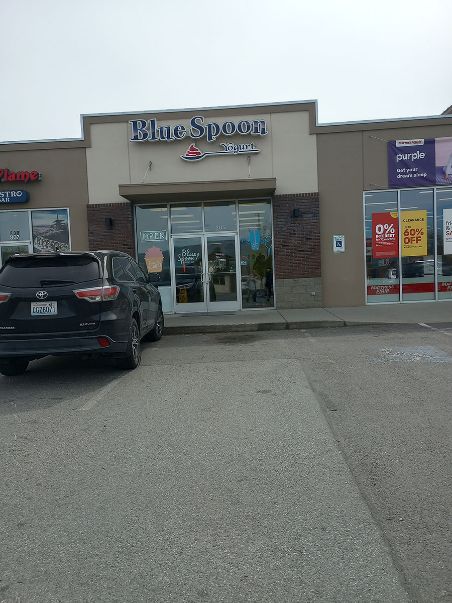
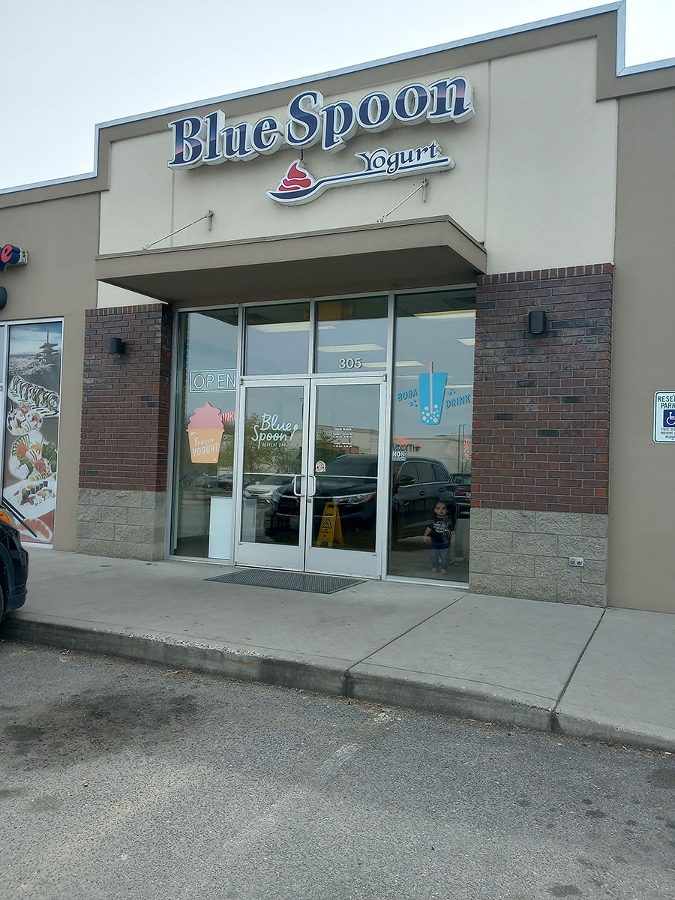

Welcome to Blue Spoon!
Blue Spoon serves frozen yogurt and boba drinks. I love going here because I am more of a fan of frozen yogurt then ice cream. Plus, I love getting my pomegranate and birthday cake or a cheesecake flavor as well as sometimes a raspberry or strawberry mixed in. I always go for cheesecake bites, the little boba poppers that are red and green or orange depending and sometimes I will add nerds on top as well.
 